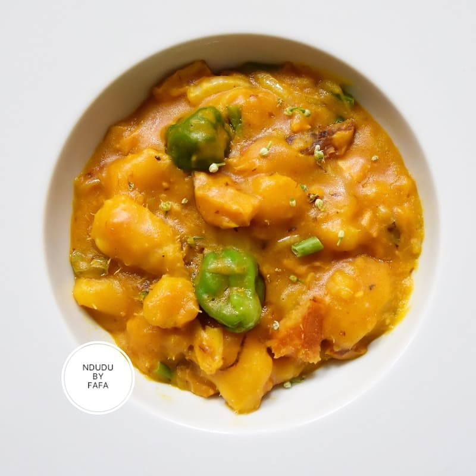

Mpotompoto

How to Prepare Mpotompoto (Yam Porriage)
Mpotompoto (yam porridge) is a popular local Ghanaian food which is mainly prepared with yam, cocoyam or potatoes.
It is also called nuhu, nyoma, yam porridge or cocoyam dish.
I am going to give you all the steps you need to make a delicious mpotompoto in Ghana and where ever you are in the world.
Ingredients
- Yam or cocoyam
- Small tomatoes
- Palm oil
- Garlic cloves
- Kpakposhito
- Seasoning (maggi or onga cube)
- Ginger optional
- Salt
- Water
- Nutmeg
- Herrings
- Medium sized onion
Steps
- Cut yam tuber into about 4 parts. Place it on a cuttin board and peel the skin of.
- Chop peeled yam into small sizes.
- Pour chopped yam into a container filled with water.
- Rinse yam thoroughly to ensure there is not dirt. It is recommended you repeat this step twice.
- Transfer rinsed yam into a clean cooking pot and fill it with a reasonable amount of water.
- Place it on high heat.
- Add tomatoes, onions and pepper to the yam.
- Cover it and allow it to boil.
- Transfer fish into a clean bowl and add water to soften it.
- Remove the tomatoes, onions, garlic and ginger from the boiling pan and transfer them into a blender.
- Blend mixture until smooth.
- Pour blended mixture into the boiling yam.
- Increase the heat to facilitate boiling
- Add fish.
- Add salt to taste.
- Using a spatula, mash the yam against the sides of the cooking pot to get a porridge consistency. You can also transfer some of the cooked yam into an earthenware bowl and mash. After that you transfer it back into the mixture. Do not mash all of them.
- >Add seasoning
- Add palm oil.
- Allow it to boil for about 7 – 10 minutes.
- Off the fire and serve whiles hot.
- Mpotompoto is a one pot meal. It can be enjoyed at anytime of the day.
Return to main page